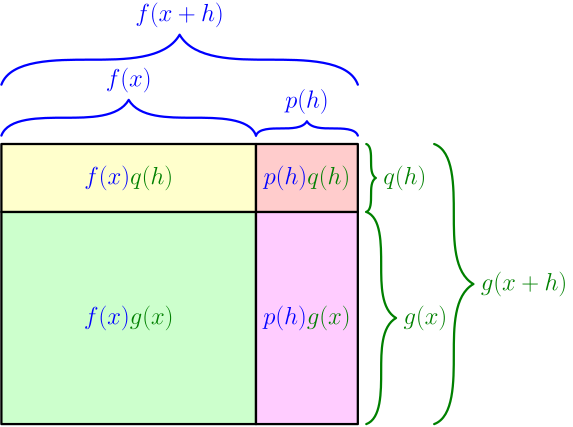

Product Rule and Quotient Rule¶
Product rule¶
Suppose that the derivatives $f'(x)$ and $g'(x)$ exist. We calculate $\frac{d}{dx} (f(x)g(x))$. With the definition of derivative, we get $$ f'(x) = \lim_{h \to 0} \frac{~~ \overbrace{f(x+h)-f(x)}^{\text{let's call this }p(h)} ~~}{h} = \lim_{h \to 0} \frac{p(h)}{h}, $$ and letting $p(h)=f(x+h)-f(x)$ will make this derivation a lot easier to follow. Now we also have $$ f(x+h) = f(x)+p(h), $$ which makes sense, given that $p(h)$ is the difference of $f(x)$ and $f(x+h)$. Similarly, we let $q(h) = g(x+h)-g(x)$, and we get $$ \begin{align} \lim_{h \to 0} \frac{q(h)}{h} &= g'(x), \\ g(x+h) &= g(x)+q(h). \end{align} $$ Now we get $$ \begin{align} \blue{f(x+h)}\green{g(x+h)} &= \blue{(f(x) + p(h))}\green{(g(x) + q(h))} \\ &= \blue{f(x)}\green{g(x)} + \blue{p(h)}\green{g(x)} + \blue{f(x)}\green{q(h)} + \blue{p(h)}\green{q(h)}. \end{align} $$ Subtracting $\blue{f(x)}\green{g(x)}$ on both sides gives $$ \blue{f(x+h)}\green{g(x+h)} - \blue{f(x)}\green{g(x)} = \blue{p(h)}\green{g(x)} + \blue{f(x)}\green{q(h)} + \blue{p(h)}\green{q(h)}. $$ This can also be seen by calculating areas in the following picture (although that doesn't work very well with negative numbers). The total area is $\blue{f(x+h)}\green{g(x+h)}$, and subtracting the area of the $\blue{f(x)}\green{g(x)}$ rectangle results in the areas of other rectangles.

Now we get $$ \begin{align} \frac{d}{dx} (f(x)g(x)) &= \lim_{h \to 0} \frac{\blue{f(x+h)}\green{g(x+h)} - \blue{f(x)}\green{g(x)}}{h} \\ &= \lim_{h \to 0} \frac{\blue{p(h)}\green{g(x)} + \blue{f(x)}\green{q(h)} + \blue{p(h)}\green{q(h)}}{h} \\ &= \lim_{h \to 0} \left( \frac{\blue{p(h)}\green{g(x)}}{h} + \frac{\blue{f(x)}\green{q(h)}}{h} + \frac{\blue{p(h)}\green{q(h)}}{h} \right) \\ &= \lim_{h \to 0} \left( \frac{\blue{p(h)}}{h}\green{g(x)} + \blue{f(x)}\frac{\green{q(h)}}{h} + \frac{\blue{p(h)}}{h} \frac{\green{q(h)}}{h} h \right) \\ &= f'(x)g(x) + f(x)g'(x) + f'(x)g'(x) \cdot 0 \\ &= f'(x)g(x) + f(x)g'(x). \end{align} $$
If $f'(x)$ and $g'(x)$ exist, then $$ \frac{d}{dx} (f(x)g(x)) = f'(x)g(x) + f(x)g'(x). $$ This is known as the product rule.
In general, $\frac{d}{dx} (f(x)g(x))$ and $\left( \frac{d}{dx} f(x) \right)\left( \frac{d}{dx} g(x) \right)$ are not the same. For example, $$ \frac{d}{dx}(x \cdot x) = \frac{d}{dx} x^2 = 2x, $$ but $$ \left( \frac{d}{dx}x \right)\left( \frac{d}{dx} x \right) = 1 \cdot 1 = 1. $$ In this situation, the product rule gives $$ \frac{d}{dx} (x \cdot x) = \left( \frac{d}{dx} x \right) x + x \left( \frac{d}{dx} x \right) = 1 \cdot x + x \cdot 1 = 2x, $$ which is the correct result.
Quotient rule¶
Suppose that $f'(x)$ and $g'(x)$ exists, and $g(x) \ne 0$. We calculate $\frac{d}{dx} \left( \frac{f(x)}{g(x)} \right)$. We have $$ \frac{f(x)}{g(x)} = f(x) g(x)^{-1}. $$ By applying the product rule, we get $$ \frac{d}{dx} \left( f(x) g(x)^{-1} \right) = f'(x)g(x)^{-1} + f(x) \cdot \frac{d}{dx} \left( g(x)^{-1} \right). $$ The power rule gives $\frac{d}{dx} x^{-1} = (-1)x^{-2}$, and by using that with the chain rule, we get $$ \frac{d}{dx} \left( g(x)^{-1} \right) = (-1)g(x)^{-2}g'(x). $$ By bringing all this together, we get $$ \begin{align} \frac{d}{dx} \frac{f(x)}{g(x)} &= \frac{d}{dx} \left( f(x)g(x)^{-1} \right) \\ &= f'(x)g(x)^{-1} + f(x) \cdot \frac{d}{dx} \left( g(x)^{-1} \right) \\ &= f'(x)g(x)^{-1} + f(x) \cdot (-1)g(x)^{-2}g'(x) \\ &= \frac{f'(x)}{g(x)} + (-1)\frac{f(x)g'(x)}{g(x)^2} \\ &= \frac{f'(x)g(x)}{g(x)^2} - \frac{f(x)g'(x)}{g(x)^2} \\ &= \frac{f'(x)g(x) - f(x)g'(x)}{g(x)^2}. \end{align} $$
If $f'(x)$ and $g'(x)$ exists, and $g(x) \ne 0$, then $$ \frac{d}{dx} \frac{f(x)}{g(x)} = \frac{f'(x)g(x) - f(x)g'(x)}{g(x)^2}. $$ This is known as the quotient rule.
The quotient rule is messy and it doesn't simplify nicely. Instead of using the quotient rule, you can always rewrite $\frac{f(x)}{g(x)}$ as $f(x)g(x)^{-1}$ and then apply other derivative rules, because that's how the quotient rule is derived. On the other hand, the quotient rule gets the job done in one step, although that step is ugly.
For example, you can use the quotient rule along with power rule and derivative of sum to get $$ \frac{d}{dx} \left( \frac{x^2}{x+x^{-1}} \right) = \frac{2x\left( x+x^{-1} \right)-x^2\left( 1 + (-1)x^{-2} \right)}{\left( x + x^{-1} \right)^2}. $$ Without the quotient rule, the calculation looks like this (see the derivation of the quotient rule for explanations): $$ \begin{align} \frac{d}{dx} \left( \frac{x^2}{x+x^{-1}} \right) &= \frac{d}{dx} \left( x^2(x+x^{-1})^{-1} \right) \\ &= 2x(x+x^{-1})^{-1} + x^2 \cdot \frac{d}{dx}\left( (x+x^{-1})^{-1} \right) \\ &= 2x(x+x^{-1})^{-1} + x^2(-1)(x+x^{-1})^{-2} \cdot \frac{d}{dx}(x + x^{-1}) \\ &= 2x(x+x^{-1})^{-1} + x^2(-1)(x+x^{-1})^{-2} \left( 1 + (-1)x^{-2} \right) \end{align} $$ Both of these results simplify to $$ \frac{x^2+3}{(x+x^{-1})^2}. $$